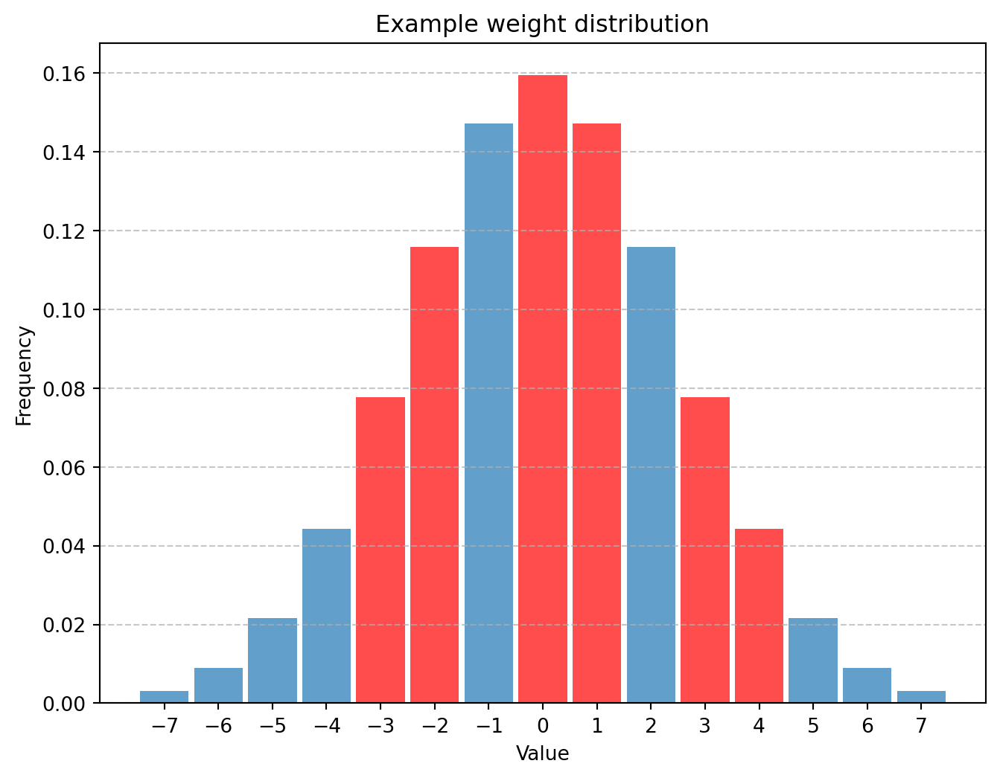

Idea
At inference, for each position X in a group of weights, corresponding bit in a bitmask is toggled up to indicate that this weight is equal to the most common weight (still in int4) in this group of weights. If bit is toggled down, then we should pop int4 weight from stack and put at this position.
Idea is that in each group of weights, there is enough “most common weights” to justify presence of such bitmask.
Implementation, experiments and caveats
Turns out, this idea has some merit, and results are promising.
So, first of all: in order to bring some notable improvements, we need to expand the bitmask to cover more values, single bit ain’t gonna cut it. Experiment on Sheared LLama(xia2024shearedllamaacceleratinglanguage?), quantized to 4 bits with round-to-nearest method (64 and 128 group-size) shows that, on average, distribution of quantized weights is such that we can represent only 10% of all weights, while we should keep 90% of them in the stack + bitmasks.
So, I expand the mask to contain 2 bits now, which translates to 3 values for 3 most common weights and with 0 indicating that we need to pop weight from the stack. Compression ratio is now around 25% (for Sheared LLaMa, again) and this gets interesting.
Mind you, this all is just lossless compression, and now we can get further: introduce lossy compression!
For lossy compression, I decided to squish 6 values from 3-bit range into 3 values from our 2-bit masked representation, in a following way (for a range of quantized weight values from -7 to +7):
-3 and -2 encoded as -2
0 and 1 encoded as 0
+3 and +4 encoded as +2and then, as “most common values” we take as:
-2 = (dequantized(-3) + dequantized(-2)) / 2
0 = (dequantized(0) + dequantized(-1)) / 2
+2 = (dequantized(+2) + dequantized(+3)) / 2This allows us to represent 6 values with 3 values, which is 2 bits + pull indicator.
As an example, let’s assume that we have group of weights with such distribution of values:
Red indicates weights that are considered “most common” and are encoded with 2-bit mask, blue are the rest, that end up in a stack.
Apparently, about half of the model can be represented like this, and PPL increase is minor! (with 1.71 for my 4-bit quantization, and 1.76 for variable-length quantization). I tested it by “snapping” weight values to values that we get after such variable-length encoding, and keep in mind, the underlying quantization method is just RTN. With better quantization method, PPL increase should be even lower.
These bitmasks, however, are now a menace, because now we have whole model “duplicated” in 2-bit representation, with this stacked mess on the side.
A key to get rid of this is to also subdivide each group into group of 8 weights, determine which one of them has enough compressable weights, and then indicate it in yet another bitmask, taking into account everything. We compress like this only groups of 8 weights that have 3 or more weights that can be encoded with 2-bit variable-length representation. This reduces number of possible weights to be encoded with 2-bit variable-length representation, but we are guaranteed that we save some space.
This method is compatible with any 4-bit quantization method, the only problem is to write a kernel, naive pytorch is way too slow.
…
Which I’m about to do, once I finish with far bigger things, that are right around the corner.
Cite this as
@misc{avietisov2024varquantmasked,
title={Abusing distributional properties of 4-bit quantized weights for compression with variable length quantization},
author={Hlib Avietisov},
year={2024},
howpublished={Online, available at \url{https://havietisov.github.io/posts/q-compression/}},
}